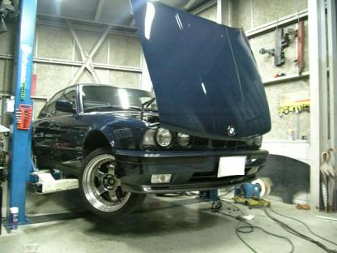
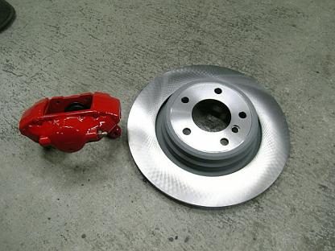
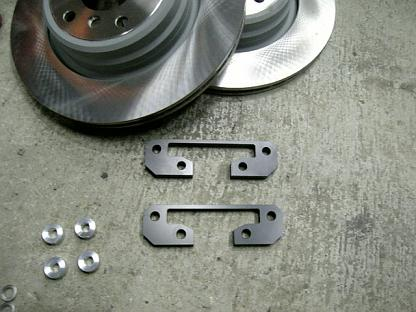
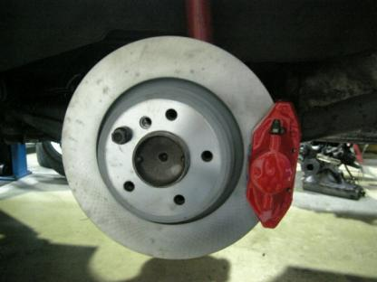

2007/4/10 リヤブレーキの2pot brembo化
 パッドが限界まで磨耗していたのと、走行距離も18万キロを超え、 キャリパーもそろそろO/Hの時期だったのと。。 フロントブレーキを強化して、バランスが悪くなったので思い切ってリヤも強化＾＾
|
 今回流用するのは、キャリパー・・・ランエボ?[用リヤキャリパー ローター・・・E38 750i用 328mm×20mmローター |
 今回もそのキャリパーを、PowerStationで製作してもらったブラケットを使って装着します。 |
 リヤは、サイドブレーキがあるのでどうなるかと思ったけど。。 |